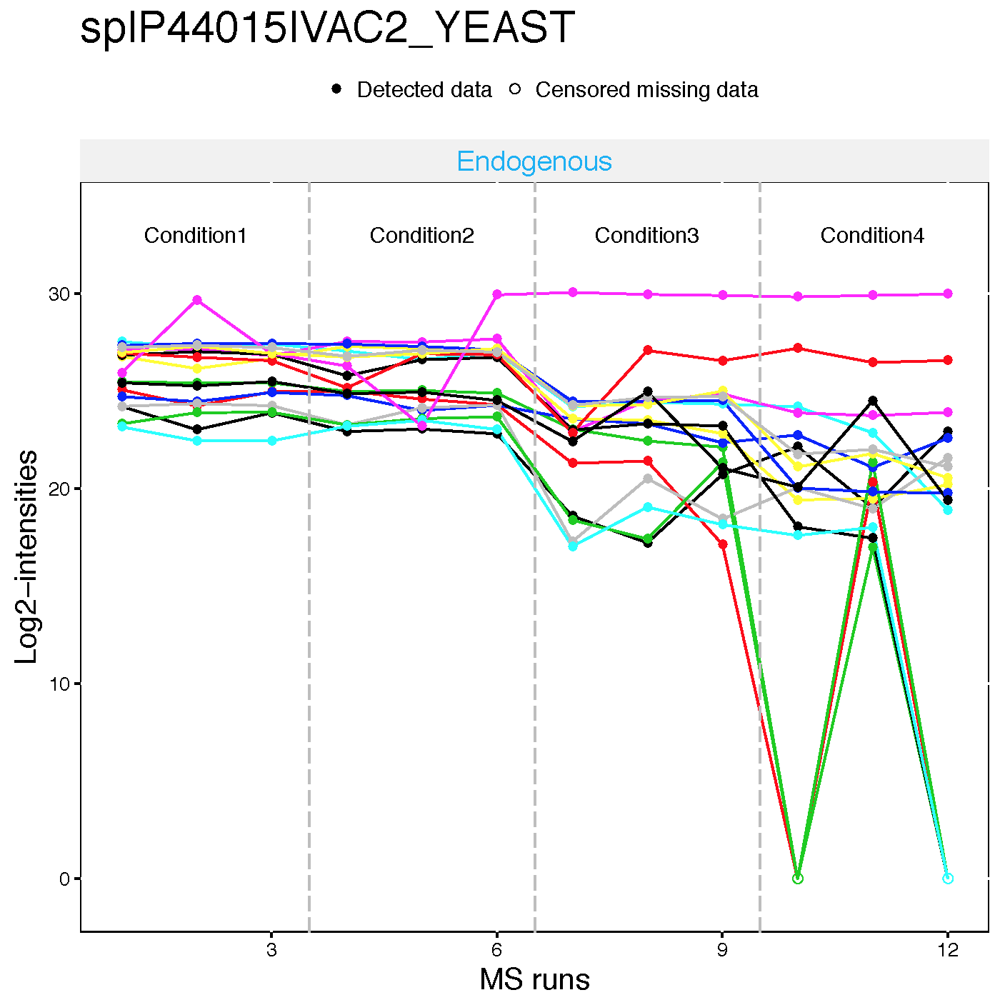
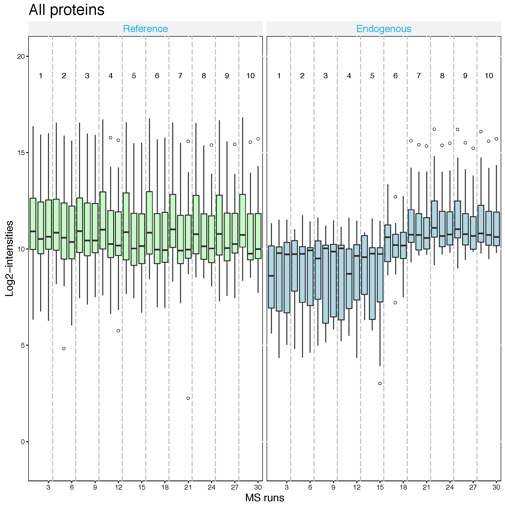

Chapter 2 Day 1 - Section 2 : MSstats, Data processing - Normalization and run summarization
2.1 Data
- The pre-processed data,
input.skyline.rda,input.maxquant.rda,input.openms.rda,input.progenesis.rdafrom section 1.
2.2 dataProcess with Skyline data
Let’s start processing steps. It includes log transformation of intensities, normalization and run-level summarization.

2.2.1 Load MSstats
Load MSstats first. Then you are ready to start MSstats.
library(MSstats)
?MSstats## Registered S3 methods overwritten by 'ggplot2':
## method from
## [.quosures rlang
## c.quosures rlang
## print.quosures rlang2.2.2 Load the pre-processed data of Skyline output
load(file='data/data_Skyline/input.skyline.rda')2.2.3 Normalizing and summarizing data with dataProcess
! Always pay attention to the default options
To get started with this function, visit the help section of dataProcess first:
?dataProcess2.2.3.1 Default normalization and summarization options
dataProcess perform (1) normalization first. The default option for normalization is equalizeMedians. `equalizeMedians’ fits for label-based SRM experiments, which we can use reference signals. There are three more options for normalization. Depending on the suitable assumption for your experiment, you can choose one of them.
Then, (2) run level summarization will be performed including missing value imputation by accerelated failure model and robust parameter estimation by TMP (Tukey’s median polish).
Below show the default for all options in dataProcess except censoredInt. censoredInt='0' should be used for Skyline output.
quant.skyline <- dataProcess(raw = input.skyline,
logTrans=2,
normalization = 'equalizeMedians',
summaryMethod = 'TMP',
MBimpute=TRUE,
censoredInt='0',
cutoffCensored='minFeature',
maxQuantileforCensored = 0.999)Let’s check output from dataProcess.
# show the name of outputs
names(quant.skyline)## [1] "ProcessedData" "RunlevelData" "SummaryMethod"
## [4] "ModelQC" "PredictBySurvival"# show reformated and normalized data.
# 'ABUNDANCE' column has normalized log2 transformed intensities.
head(quant.skyline$ProcessedData)## PROTEIN PEPTIDE TRANSITION
## 3 sp|D6VTK4|STE2_YEAST EGEVEPVDMYTPDTAADEEARK_3 sum_NA
## 20 sp|D6VTK4|STE2_YEAST FYPGTLSSFQTDSINNDAK_2 sum_NA
## 35 sp|D6VTK4|STE2_YEAST IGPFADASYK_2 sum_NA
## 46 sp|D6VTK4|STE2_YEAST KETTSDK_2 sum_NA
## 51 sp|D6VTK4|STE2_YEAST NQFYQLPTPTSSK_2 sum_NA
## 62 sp|D6VTK4|STE2_YEAST TFVSETADDIEK_2 sum_NA
## FEATURE LABEL GROUP_ORIGINAL SUBJECT_ORIGINAL
## 3 EGEVEPVDMYTPDTAADEEARK_3_sum_NA L Condition1 1
## 20 FYPGTLSSFQTDSINNDAK_2_sum_NA L Condition1 1
## 35 IGPFADASYK_2_sum_NA L Condition1 1
## 46 KETTSDK_2_sum_NA L Condition1 1
## 51 NQFYQLPTPTSSK_2_sum_NA L Condition1 1
## 62 TFVSETADDIEK_2_sum_NA L Condition1 1
## RUN GROUP SUBJECT INTENSITY SUBJECT_NESTED ABUNDANCE FRACTION
## 3 1 1 1 187418443 1.1 27.23304 1
## 20 1 1 1 86229170 1.1 26.11302 1
## 35 1 1 1 157996653 1.1 26.98667 1
## 46 1 1 1 177684007 1.1 27.15609 1
## 51 1 1 1 140368798 1.1 26.81600 1
## 62 1 1 1 182600922 1.1 27.19547 1
## originalRUN censored
## 3 JD_06232014_sample1_B.raw FALSE
## 20 JD_06232014_sample1_B.raw FALSE
## 35 JD_06232014_sample1_B.raw FALSE
## 46 JD_06232014_sample1_B.raw FALSE
## 51 JD_06232014_sample1_B.raw FALSE
## 62 JD_06232014_sample1_B.raw FALSE# This table includes run-level summarized log2 intensities. (column : LogIntensities)
# Now one summarized log2 intensities per Protein and Run.
# NumMeasuredFeature : show how many features are used for run-level summarization.
# If there is no missing value, it should be the number of features in certain protein.
# MissingPercentage : the number of missing features / the number of features in certain protein.
head(quant.skyline$RunlevelData)## RUN Protein LogIntensities NumMeasuredFeature
## 1 1 sp|D6VTK4|STE2_YEAST 26.95958 7
## 2 2 sp|D6VTK4|STE2_YEAST 26.78088 7
## 3 3 sp|D6VTK4|STE2_YEAST 26.68074 7
## 4 4 sp|D6VTK4|STE2_YEAST 26.98540 7
## 5 5 sp|D6VTK4|STE2_YEAST 26.90384 7
## 6 6 sp|D6VTK4|STE2_YEAST 26.71479 7
## MissingPercentage more50missing NumImputedFeature
## 1 0 FALSE 0
## 2 0 FALSE 0
## 3 0 FALSE 0
## 4 0 FALSE 0
## 5 0 FALSE 0
## 6 0 FALSE 0
## originalRUN GROUP GROUP_ORIGINAL SUBJECT_ORIGINAL
## 1 JD_06232014_sample1_B.raw 1 Condition1 1
## 2 JD_06232014_sample1_C.raw 1 Condition1 1
## 3 JD_06232014_sample1-A.raw 1 Condition1 1
## 4 JD_06232014_sample2_A.raw 2 Condition2 2
## 5 JD_06232014_sample2_B.raw 2 Condition2 2
## 6 JD_06232014_sample2_C.raw 2 Condition2 2
## SUBJECT_NESTED SUBJECT
## 1 1.1 1
## 2 1.1 1
## 3 1.1 1
## 4 2.4 4
## 5 2.4 4
## 6 2.4 4# show which summarization method is used.
head(quant.skyline$SummaryMethod)## [1] "TMP"2.2.4 Visualization of processed data
2.2.4.1 Quality control plots
Now let’s look at what the equalize medians procedure did to our data. QC plot is good to see the distribution of intensities per MS run and outliers. So, it is good visualization to check normalization. However, not good to see individual intensities.
# QC plot for normalized data with equalize median method
dataProcessPlots(data = quant.skyline,
type="QCplot",
width=7, height=7,
which.Protein = 'allonly',
address='data/data_Skyline/ABRF_skyline_equalizeNorm_')Then, ABRF_skyline_equalizeNorm_QCPlot.pdf are generated in the currect directory.

Now the median log2 intensities per run across MS runs (lines in the boxes) are the same.
2.2.4.2 Profile plots
Profile plot is good visualization to check individual measurements. Each dot means one intensity. The dots are linked with line per feature. If line is disconnected, that means there is no value (missing value). Color means different peptides and charge stages. Different line type means different transition.
# if you have many MS runs, adjust width of plot (makd wider)
# Profile plot for the data with equalized median method
dataProcessPlots(data = quant.skyline,
type="Profileplot",
width=7, height=7,
address="data/data_Skyline/ABRF_skyline_equalizeNorm_")ABRF_skyline_equalizeNorm_ProfilePlot.pdf and ABRF_skyline_equalizeNorm_ProfilePlot_wSummarization.pdf are generated in the current directory.
Then, Let’s go though profile plots to see overall quality of data.
There are two pdfs for each protein, first is profile plot with normalized data and second plot is profile plot with normalilzed data and summarized data. This profile plot shows each peptide transition across runs, grouped per condition. Ech peptide has a different colour/type layout.

This plot shows The panel on the right shows the same transitions in grey, with the values as summarized by the model overlayed in red.

Instead of making all profile plots for all proteins, we can make plot for individual protein.
Here is the example of spike-in protein, sp|P44015|VAC2_YEAST
dataProcessPlots(data = quant.skyline,
type="Profileplot",
featureName="NA",
width=7, height=7,
which.Protein = 'sp|P44015|VAC2_YEAST',
address="data/data_Skyline/ABRF_skyline_equalizeNorm_P44015_")

2.2.4.3 Condition plots
Condition plots illustrate the systematic difference between conditions. The dots indicates the mean of all summarized intensities in each condition and default error bar is CI with 0.95 significant level. However, it is not related with model-based analysis.
dataProcessPlots(data = quant.skyline,
type="conditionplot",
width=7, height=7,
address="data/data_Skyline/ABRF_skyline_equalizeNorm_")We can draw the condition plot for a protein, sp|P44015|VAC2_YEAST .
dataProcessPlots(data = quant.skyline,
type="conditionplot",
width=7, height=7,
which.Protein = 'sp|P44015|VAC2_YEAST',
address="data/data_Skyline/ABRF_skyline_equalizeNorm_P44015_")
Challenge
This is the study design. Let’s check visualization for other 5 spike-in proteins. 1. sp|P55752|ISCB_YEAST 2. sp|P44374|SFG2_YEAST 3. sp|P44983|UTR6_YEAST 4. sp|P44683|PGA4_YEAST 5. sp|P55249|ZRT4_YEAST

Experimental design for spike-in proteins
2.2.5 Different normalization option
Let’s see the different normalization effect with SRM dataset including two proteins
head(SRMRawData)## ProteinName PeptideSequence PrecursorCharge FragmentIon ProductCharge
## 243 IDHC ATDVIVPEEGELR 2 y7 NA
## 244 IDHC ATDVIVPEEGELR 2 y7 NA
## 245 IDHC ATDVIVPEEGELR 2 y8 NA
## 246 IDHC ATDVIVPEEGELR 2 y8 NA
## 247 IDHC ATDVIVPEEGELR 2 y9 NA
## 248 IDHC ATDVIVPEEGELR 2 y9 NA
## IsotopeLabelType Condition BioReplicate Run Intensity
## 243 H 1 ReplA 1 84361.08350
## 244 L 1 ReplA 1 215.13526
## 245 H 1 ReplA 1 29778.10188
## 246 L 1 ReplA 1 98.02134
## 247 H 1 ReplA 1 17921.29255
## 248 L 1 ReplA 1 60.47029unique(SRMRawData$ProteinName)## [1] IDHC PMG2
## 45 Levels: ACEA ACH1 ACON ADH1 ADH2 ADH4 ALDH6 ALF CISY1 CISY2 ... SUCB2.2.5.1 No normalization
No normalization is performed. If you had your own normalization before MSstats, you should use like below.
srm.nonorm <- dataProcess(SRMRawData, normalization=FALSE)
dataProcessPlots(srm.nonorm, type='QCplot', address='srm_noNorm_')
2.2.5.2 Equalize medians normalization
The default option for normalization is ‘equalizeMedians’, where all the
intensities in a run are shifted by a constant, to equalize the median of intensities across runs for
label-free experiment. This normalization method is appropriate when we can assume that the
majority of proteins do not change across runs. Be cautious when using the equalizeMedians
option for a label-free DDA dataset with only a small number of proteins. For label based experiment,
equalizeMedians equalizes the median of reference intensities across runs and is generally proper
even for a dataset with a small number of proteins.
srm.equalmed <- dataProcess(SRMRawData, normalization = 'equalizeMedians')
dataProcessPlots(srm.equalmed, type='QCplot', address='srm_equalM_')
2.2.5.3 Quantile normalization
The distribution of all the intensities in each run will become the same across runs for label-free experiment. For label-based experiment, the distribution of all the reference intensities will be become the same across runs and all the endogenous intensities are shifted by a constant corresponding to reference intensities.
srm.quantile <- dataProcess(SRMRawData, normalization='quantile')
dataProcessPlots(srm.quantile, type='QCplot', address='srm_quantile_')
2.2.5.4 Global standards normalization : example 1
If you have a spiked in standard across all MS runs, you may set this to globalStandards and define the standard with nameStandards option. Global standard peptide or Protein names, which you can assume that they have the same abundance across MS runs, should be assigned in the vector for this option.
First, let’s assume that PMG2 proteins is the spike-in protein and shoule be equal amount across MS runs.
srm.global.pmg2 <- dataProcess(SRMRawData, normalization ='globalStandards',
nameStandards = 'PMG2')
dataProcessPlots(srm.global.pmg2, type='QCplot', address='srm_global_PMG2_')
Second, let’s assume that IDHC proteins is the spike-in protein and shoule be equal amount across MS runs.
2.2.5.5 Global standards normalization : example 2
srm.global.idhc <- dataProcess(SRMRawData, normalization ='globalStandards',
nameStandards = 'IDHC')
dataProcessPlots(srm.global.idhc, type='QCplot', address='srm_global_IDHC_')
2.2.6 Different summarization option
Here is the summary of combinations for imputation options with summaryMethod=‘TMP’.
MBimpute=TRUE : AFT model-based imputation using
cutoffCensoredvalue in the AFT model.The default option for
cutoffCensoredisminFeature, taking the minimum value for the corresponding feature. With this option, those runs with substantial missing measurements will be biased by the cutoff value. In such case, you may remove the runs that have more than 50% missing values from the analysis with the option remove50missing=TRUE.In case that there are completely missing measurements in a run for a protein, any imputation will not be performed.
2.2.6.1 No imputation, TMP summarization only
quant.skyline.TMPonly <- dataProcess(raw = input.skyline,
logTrans=2,
summaryMethod = 'TMP',
MBimpute=FALSE, ##
censoredInt='0',
cutoffCensored='minFeature',
maxQuantileforCensored = 0.999)The column, censored, is not in the processed data any more.
head(quant.skyline.TMPonly$ProcessedData)## PROTEIN PEPTIDE TRANSITION
## 27092 sp|D6VTK4|STE2_YEAST EGEVEPVDM[+16]YTPDTAADEEARK_3 sum_NA
## 10700 sp|D6VTK4|STE2_YEAST EGEVEPVDMYTPDTAADEEARK_3 sum_NA
## 20407 sp|D6VTK4|STE2_YEAST FYPGTLSSFQTDSINNDAK_2 sum_NA
## 2213 sp|D6VTK4|STE2_YEAST IGPFADASYK_2 sum_NA
## 938 sp|D6VTK4|STE2_YEAST KETTSDK_2 sum_NA
## 26116 sp|D6VTK4|STE2_YEAST NQFYQLPTPTSSK_2 sum_NA
## FEATURE LABEL GROUP_ORIGINAL
## 27092 EGEVEPVDM[+16]YTPDTAADEEARK_3_sum_NA L Condition1
## 10700 EGEVEPVDMYTPDTAADEEARK_3_sum_NA L Condition1
## 20407 FYPGTLSSFQTDSINNDAK_2_sum_NA L Condition1
## 2213 IGPFADASYK_2_sum_NA L Condition1
## 938 KETTSDK_2_sum_NA L Condition1
## 26116 NQFYQLPTPTSSK_2_sum_NA L Condition1
## SUBJECT_ORIGINAL RUN GROUP SUBJECT SUBJECT_NESTED INTENSITY
## 27092 1 1 1 1 1.1 5222795
## 10700 1 1 1 1 1.1 182195648
## 20407 1 1 1 1 1.1 86229170
## 2213 1 1 1 1 1.1 157996653
## 938 1 1 1 1 1.1 177684007
## 26116 1 1 1 1 1.1 140368798
## ABUNDANCE METHOD originalRUN
## 27092 22.07353 1 JD_06232014_sample1_B.raw
## 10700 27.19805 1 JD_06232014_sample1_B.raw
## 20407 26.11881 1 JD_06232014_sample1_B.raw
## 2213 26.99246 1 JD_06232014_sample1_B.raw
## 938 27.16188 1 JD_06232014_sample1_B.raw
## 26116 26.82179 1 JD_06232014_sample1_B.raw2.3 dataProcess with MaxQuant data
load(file='data/data_MaxQuant/input.maxquant.rda')head(input.maxquant)## ProteinName PeptideSequence PrecursorCharge FragmentIon
## 1 D6VTK4 EGEVEPVDMYTPDTAADEEARK 3 NA
## 2 D6VTK4 FYPGTLSSFQTDSINNDAK 2 NA
## 3 D6VTK4 IGPFADASYK 2 NA
## 4 D6VTK4 NQFYQLPTPTSSK 2 NA
## 5 D6VTK4 TFVSETADDIEK 2 NA
## 6 D6VTK4 TNTITSDFTTSTDR 2 NA
## ProductCharge IsotopeLabelType Condition BioReplicate
## 1 NA L Condition1 1
## 2 NA L Condition1 1
## 3 NA L Condition1 1
## 4 NA L Condition1 1
## 5 NA L Condition1 1
## 6 NA L Condition1 1
## Run Intensity
## 1 JD_06232014_sample1_B 87141000
## 2 JD_06232014_sample1_B 46167000
## 3 JD_06232014_sample1_B 45425000
## 4 JD_06232014_sample1_B 47094000
## 5 JD_06232014_sample1_B NA
## 6 JD_06232014_sample1_B 62786000sum(is.na(input.maxquant$Intensity)) ## [1] 40056sum(!is.na(input.maxquant$Intensity) & input.maxquant$Intensity==0)## [1] 0Note! MaxQuant output has only NA. censoredInt=‘NA’ should be used for MaxQuant output.
Challenges
- Try
dataProcesswith equalize median normalization for MaxQuant output. (input.maxquant.rdafrom section 1)
quant.maxquant <- dataProcess(raw = input.maxquant,
logTrans=2,
#normalization = 'quantile',
summaryMethod = 'TMP',
MBimpute=TRUE,
censoredInt='NA',
cutoffCensored='minFeature',
maxQuantileforCensored = 0.999)
- Try
dataProcesswith quantile normalization for MaxQuant output. (input.maxquant.rdafrom section 1)
quant.maxquant.quantile <- dataProcess(raw = input.maxquant,
logTrans=2,
normalization = 'quantile',
summaryMethod = 'TMP',
MBimpute=TRUE,
censoredInt='NA',
cutoffCensored='minFeature',
maxQuantileforCensored = 0.999)
- Draw QC plots for both cases above and compare.
dataProcessPlots(data = quant.maxquant,
type="QCplot",
width=7, height=7,
which.Protein = 'allonly',
address='data/data_MaxQuant/ABRF_maxquant_equalMed_')
dataProcessPlots(data = quant.maxquant.quantile,
type="QCplot",
width=7, height=7,
which.Protein = 'allonly',
address='data/data_MaxQuant/ABRF_maxquant_quantile_')
- Draw Profile plots of protein
P55249, for both cases above and compare.
dataProcessPlots(data = quant.maxquant,
type="Profileplot",
featureName="NA",
width=7, height=7,
which.Protein = 'P55249',
address="data/data_MaxQuant/ABRF_maxquant_equalMed_P55249_")
dataProcessPlots(data = quant.maxquant.quantile,
type="Profileplot",
featureName="NA",
width=7, height=7,
which.Protein = 'P55249',
address="data/data_MaxQuant/ABRF_maxquant_quantile_P55249_")2.4 dataProcess with OpenMS data
load(file='data/data_OpenMS/input.openms.rda')head(input.openms)## ProteinName PeptideSequence PrecursorCharge FragmentIon
## 1 sp|D6VTK4|STE2_YEAST EGEVEPVDMYTPDTAADEEARK 3 NA
## 2 sp|D6VTK4|STE2_YEAST FYPGTLSSFQTDSINNDAK 2 NA
## 3 sp|D6VTK4|STE2_YEAST IGPFADASYK 2 NA
## 4 sp|D6VTK4|STE2_YEAST NQFYQLPTPTSSK 2 NA
## 5 sp|D6VTK4|STE2_YEAST TFVSETADDIEK 2 NA
## 6 sp|D6VTK4|STE2_YEAST TNTITSDFTTSTDR 2 NA
## ProductCharge IsotopeLabelType Condition BioReplicate Run Intensity
## 1 0 L 1 1 1 64757900
## 2 0 L 1 1 1 38852700
## 3 0 L 1 1 1 73225800
## 4 0 L 1 1 1 63139900
## 5 0 L 1 1 1 NA
## 6 0 L 1 1 1 58905300sum(is.na(input.openms$Intensity)) ## [1] 21962sum(!is.na(input.openms$Intensity) & input.openms$Intensity==0)## [1] 0Note! OpenMS output has only NA. censoredInt=‘NA’ should be used for OpenMS output.
Challenges
- Try
dataProcesswith equalize normalization for OpenMS output. (input.openms.rdafrom section 1)
quant.openms <- dataProcess(raw = input.openms,
logTrans=2,
#normalization = 'quantile',
summaryMethod = 'TMP',
MBimpute=TRUE,
censoredInt='NA',
cutoffCensored='minFeature',
maxQuantileforCensored = 0.999)
- Try
dataProcesswith quantile normalization for OpenMS output. (input.openms.rdafrom section 1)
quant.openms.quantile <- dataProcess(raw = input.openms,
logTrans=2,
normalization = 'quantile',
summaryMethod = 'TMP',
MBimpute=TRUE,
censoredInt='NA',
cutoffCensored='minFeature',
maxQuantileforCensored = 0.999)
- Draw Profile plots of protein
sp|P55249|ZRT4_YEAST, for both cases above and compare.
dataProcessPlots(data = quant.openms,
type="Profileplot",
featureName="NA",
width=7, height=7,
which.Protein = 'sp|P55249|ZRT4_YEAST',
address="data/data_OpenMS/ABRF_openms_equalMed_P55249_")
dataProcessPlots(data = quant.openms.quantile,
type="Profileplot",
featureName="NA",
width=7, height=7,
which.Protein = 'sp|P55249|ZRT4_YEAST',
address="data/data_OpenMS/ABRF_openms_quantile_P55249_")2.5 dataProcess with Progenesis data
load(file='data/data_Progenesis/input.progenesis.rda')head(input.progenesis)## ProteinName PeptideModifiedSequence PrecursorCharge
## 1 sp|A5Z2X5|YP010_YEAST LTGNPELSSLDEVLAK 2
## 2 sp|A5Z2X5|YP010_YEAST RPAQLLL[N-term] nTerm+42.0106 2
## 3 sp|D6VTK4|STE2_YEAST EGEVEPVDMYTPDTAADEEARK 3
## 4 sp|D6VTK4|STE2_YEAST FYPGTLSSFQTDSINNDAK 2
## 5 sp|D6VTK4|STE2_YEAST IGPFADASYK 2
## 6 sp|O13297|CET1_YEAST IAGNAVGSVVK 2
## FragmentIon ProductCharge IsotopeLabelType Condition BioReplicate
## 1 NA NA L Condition1 1
## 2 NA NA L Condition1 1
## 3 NA NA L Condition1 1
## 4 NA NA L Condition1 1
## 5 NA NA L Condition1 1
## 6 NA NA L Condition1 1
## Run Intensity
## 1 JD_06232014_sample1_B 2550357.3
## 2 JD_06232014_sample1_B 865491.8
## 3 JD_06232014_sample1_B 3767734.3
## 4 JD_06232014_sample1_B 2591735.2
## 5 JD_06232014_sample1_B 2301483.1
## 6 JD_06232014_sample1_B 415181.8sum(is.na(input.progenesis$Intensity)) ## [1] 0sum(!is.na(input.progenesis$Intensity) & input.progenesis$Intensity==0)## [1] 418Note! Progenesis output has only 0. censoredInt=‘0’ should be used for Progenesis output.
Challenges
- Try
dataProcesswith equalize normalization for Progenesis output. (input.progenesis.rdafrom section 1)
quant.progenesis <- dataProcess(raw = input.progenesis,
logTrans=2,
#normalization = 'quantile',
summaryMethod = 'TMP',
MBimpute=TRUE,
censoredInt='0',
cutoffCensored='minFeature',
maxQuantileforCensored = 0.999)
- Try
dataProcesswith quantile normalization for Progenesis output. (input.progenesis.rdafrom section 1)
quant.progenesis.quantile <- dataProcess(raw = input.progenesis,
logTrans=2,
normalization = 'quantile',
summaryMethod = 'TMP',
MBimpute=TRUE,
censoredInt='0',
cutoffCensored='minFeature',
maxQuantileforCensored = 0.999)
- Draw Profile plots of protein
sp|P55249|ZRT4_YEAST, for both cases above and compare.
dataProcessPlots(data = quant.progenesis,
type="Profileplot",
featureName="NA",
width=7, height=7,
which.Protein = 'sp|P55249|ZRT4_YEAST',
address="data/data_Progenesis/ABRF_progenesis_equalMed_P55249_")
dataProcessPlots(data = quant.progenesis.quantile,
type="Profileplot",
featureName="NA",
width=7, height=7,
which.Protein = 'sp|P55249|ZRT4_YEAST',
address="data/data_Progenesis/ABRF_progenesis_quantile_P55249_")
- Compare profile plots from MaxQuant data.